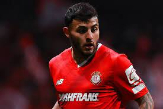
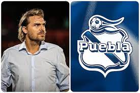
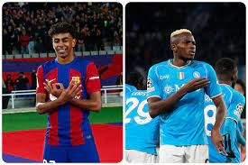

Durante una entrevista con TUDN, el que también fuera un prospecto para militar a Europa pero que nunca llegó, se mostró en rechazo de que la gente le tome fotos cuando no está en cancha, tal vez olvidando que la vida del futbolista, y lo que genera, es gracias a esa afición que le ve como ídolo, que le sigue como imagen para niños futbolistas, que le genera privilegio de sueldo millonario. "No entiendo" confirma el jugador cuando se habla de todos esos focos que tenía en Toluca, luego en Guadalajara, y de regreso con los Diablos.
Tras dos jornadas con Fernando Aristeguieta como interino, el Puebla ya tiene nuevo director técnico: Andrés Carevic. El argentino se hará cargo del equipo "enfranjado" por lo que resta del Clausura 2024 de la Liga MX.
En la primera competencia continental de clubes femeniles, la Concacaf compartió los detalles de cómo se disputará la Champions Cup Femenina y cuántos equipos serán los participantes; donde las ganadoras obtendrán un boleto al Mundial de Clubes que está impulsando FIFA.
La escuadra regiomontana viene de tres partidos sin ganar y con dos derrotas en Liga MX ante Toluca y América. La actualidad del club estadounidense es idéntica con tres sin juegos sin triunfo y dos caídas en la MLS frente a Inter Miami y Minnesota United.
Luego del empate 1-1 en la ida hace tres semanas, Barcelona y Napoli definirán este martes quien avanza a los 4tos de final de la UEFA Champions League en partido de pronóstico reservado.
